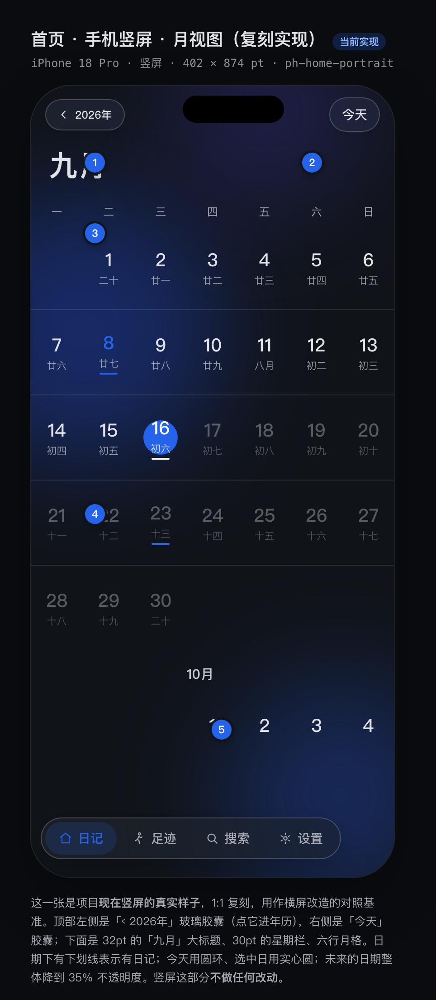
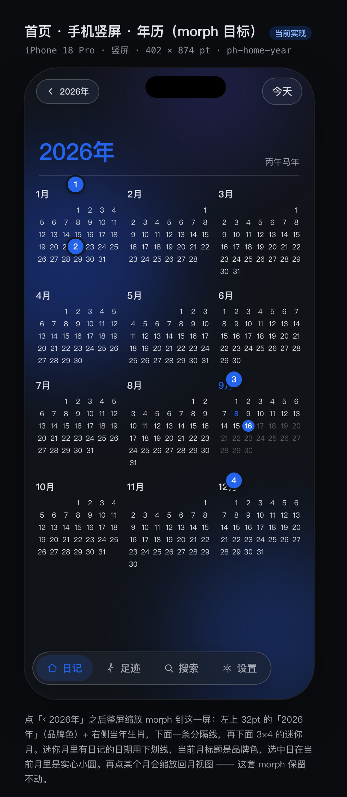
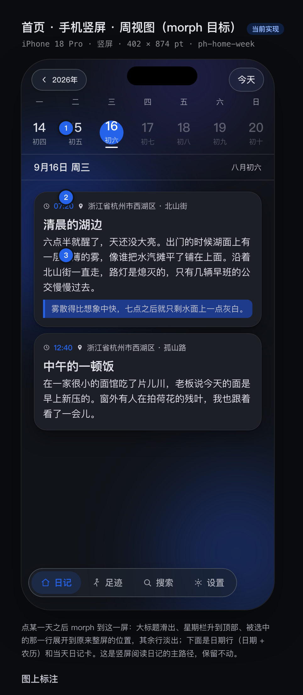
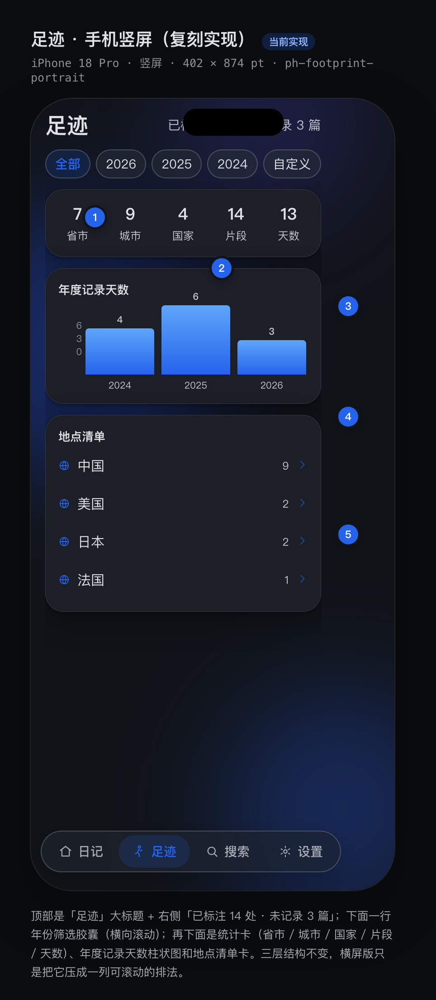
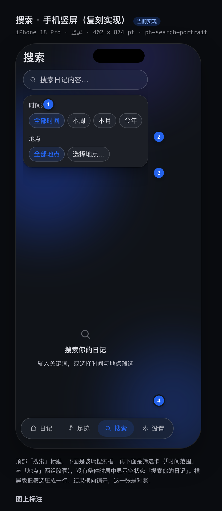
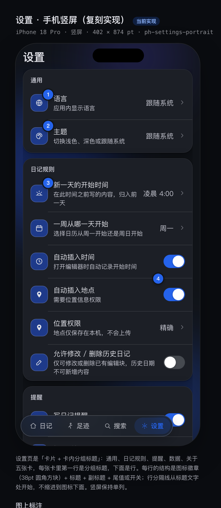
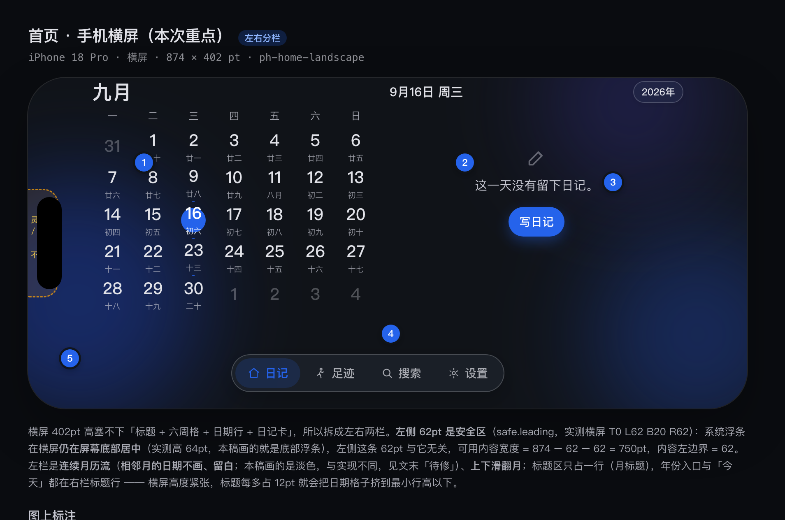
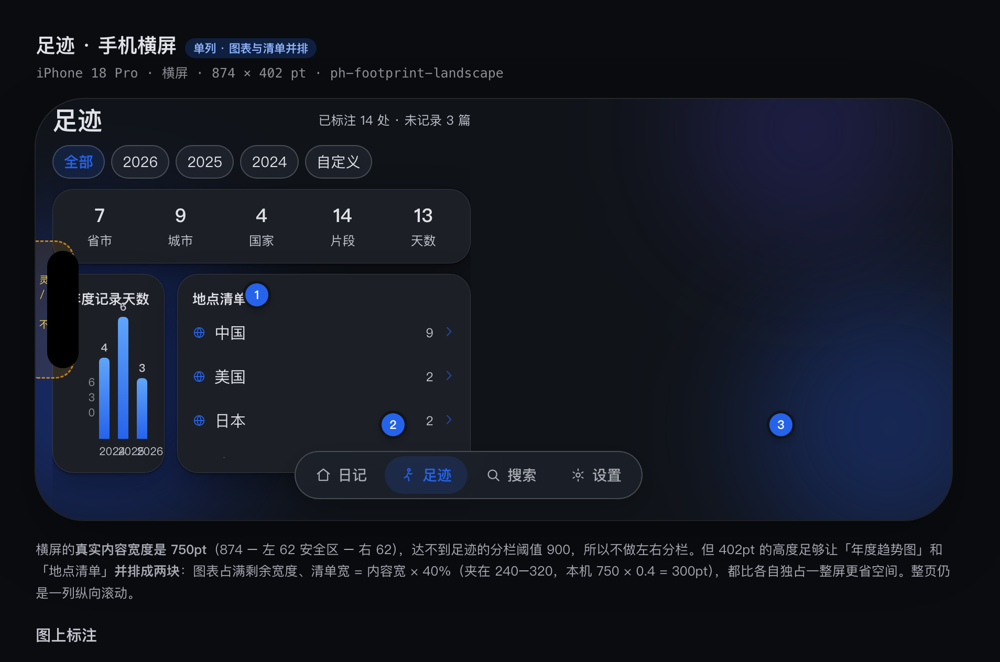
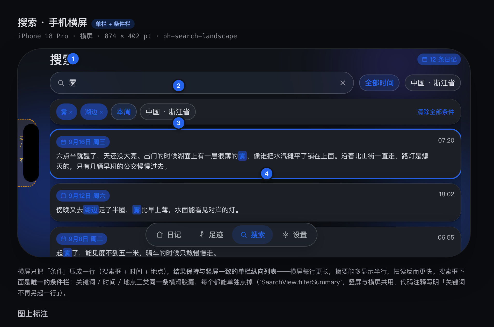
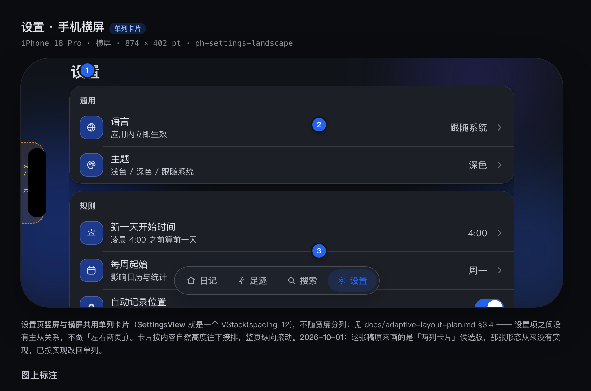

只做 iPhone：竖屏与横屏各一套版面（2026-10-01 决定不再制作 iPad 端与桌面端， 原来的宽屏三栏稿、以及「高度不足降级为周条」那张已删除）。 每一张都按设备真实尺寸（pt）绘制，2× 导出。
可交互版本：phone.html（手机端）

这一张是项目现在竖屏的真实样子，1:1 复刻，用作横屏改造的对照基准。顶部左侧是「‹ 2026年」玻璃胶囊（点它进年历），右侧是「今天」胶囊；下面是 32pt 的「九月」大标题、30pt 的星期栏、六行月格。日期下有下划线表示有日记；今天用圆环、选中日用实心圆；未来的日期整体降到 35% 不透明度。竖屏这部分不做任何改动。

点「‹ 2026年」之后整屏缩放 morph 到这一屏：左上 32pt 的「2026年」（品牌色）+ 右侧当年生肖，下面一条分隔线，再下面 3×4 的迷你月。迷你月里有日记的日期用下划线，当前月标题是品牌色，选中日在当前月里是实心小圆。再点某个月会缩放回月视图 —— 这套 morph 保留不动。

点某一天之后 morph 到这一屏：大标题滑出、星期栏升到顶部、被选中的那一行展开到原来整屏的位置，其余行淡出；下面是日期行（日期 + 农历）和当天日记卡。这是竖屏阅读日记的主路径，保留不动。

顶部是「足迹」大标题 + 右侧「已标注 14 处 · 未记录 3 篇」；下面一行年份筛选胶囊（横向滚动）；再下面是统计卡（省市 / 城市 / 国家 / 片段 / 天数）、年度记录天数柱状图和地点清单卡。三层结构不变，横屏版只是把它压成一列可滚动的排法。

顶部「搜索」标题，下面是玻璃搜索框，再下面是筛选卡（「时间范围」与「地点」两组胶囊），没有条件时居中显示空状态「搜索你的日记」。横屏版把筛选压成一行、结果横向铺开，这一张是对照。

设置页是「卡片 + 卡内分组标题」：通用、日记规则、提醒、数据、关于五张卡，每张卡里第一行是分组标题，下面是行。每行的结构是图标徽章（38pt 圆角方块）+ 标题 + 副标题 + 尾值或开关；行分隔线从标题文字处开始，不缩进到图标下面。竖屏保持单列。

横屏 402pt 高塞不下「标题 + 六周格 + 日期行 + 日记卡」，所以拆成左右两栏：左栏月历（唯一翻月方式是上下滑，横屏不提供年份切换，以免与竖屏的年历 morph 交互打架），右栏是选中日的日记。系统浮条在横屏仍在屏幕底部居中（真机实测：bar 高 64pt、紧贴底边），所以左右页边距和竖屏一样是 16pt，只有底部要给浮条留出 64pt。左侧 62pt 是安全区（safe.leading，不是浮条）：几何原点已在里面，内容左边界 = 62，可用内容宽度 = 874 − 62 − 62 = 750pt，两栏是 345 / 356.5pt。灵动岛在横屏是竖转贴左边缘的小条（37 宽 × 132 高、垂直居中），落在 x 0–37 内，比安全区窄，不用单独避让。

横屏 402pt 高放不下「统计 + 趋势图 + 清单」三块竖排，所以把趋势图与地点清单并排放进同一列里：统计行在上，下面一行左边是趋势图（flex:1）、右边是地点清单（宽 = 内容宽 × 40%，夹在 240–320pt，本机 300pt），两块高 max(140, min(190, 屏高 − 262)) = 140pt，清单在自己这块高度里内部滚动。整页仍是一列纵向滚动，不做左右分栏（可用内容宽 750pt 达不到足迹 900pt 的分栏阈值）。

横屏只把「条件」压成一行（搜索框 + 时间 + 地点），结果保持与竖屏一致的单栏纵向列表——横屏每行更长，摘要能多显示半行，扫读反而更快。搜索框下面是唯一的条件栏：关键词 / 时间 / 地点三类同一条横滑胶囊，每个都能单独点掉，右侧是「清除全部条件」（SearchView.filterSummary，竖屏与横屏共用；代码注释写明「关键词不再另起一行」）。本图把关键词画成了单独一行，与实现不同，按实现重画时应压成一条。

设置页竖屏与横屏共用单列卡片（SettingsView 就是一个 VStack，不随宽度分列；见 docs/adaptive-layout-plan.md §3.4）。本图里画的两列是候选版，没有实现：设置项之间没有主从关系，不做「左右两页」，所以这张图需要按单列重画。
阅读页在横屏仍然是单栏限宽（≤660pt）并居中：横屏的宽度应该换成更好的每行字数，而不是把正文拆成两栏。阅读与编辑正文列同为 660pt（contentColumn(660)），进出编辑时卡片不跳。工具按钮收到顶栏一行，返回键在页面最左（安全区 62pt + 页边距 16pt 之后，x ≈ 78）、操作在右。底部留出浮条/指示条的高度。